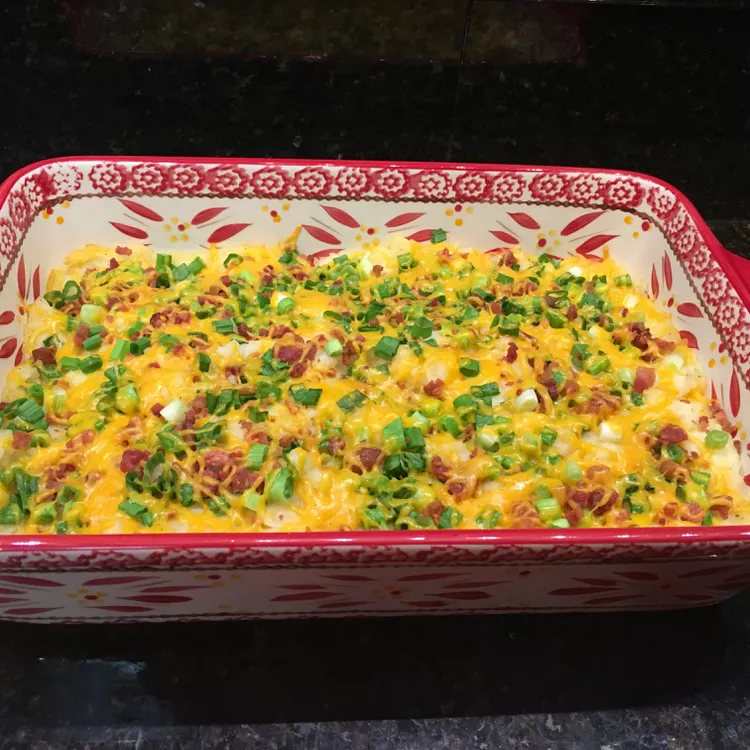

Loaded Baked Potato Casserole

Description:
Great and easy potato casserole packed with bacon, Cheddar, and green onions.
Ingredients:
- 10 Yukon Gold potatoes, peeled and halved
- 6 slices bacon
- 1 1/2 cups shredded Cheddar cheese, divided
- 1 cup evaporated milk
- 1/2 cup sour cream
- 1 teaspoon salt
- 1/2 teaspoon ground black pepper
- 1 cuup sliced green onions, divided
- 1/2 cup shredded Cheddar cheese
Steps:
- Preheat oven to 350 degrees F (175 degrees C). Lightly grease a 9x13-inch baking dish.
- Place potatoes into a large pot and cover with salted water; bring to a boil.
Reduce heat to medium-low and simmer until tender, about 20 minutes.
Drain and return potatoes to pot.
- Meanwhile, arrange bacon in a large skillet and cook over medium-high heat, turning occasionally, until evenly browned, about 10 minutes.
Drain bacon on paper towels and crumble.
- Combine 1 1/2 cup Cheddar cheese, evaporated milk, sour cream, salt, and black pepper in the pot with potatoes.
Mash with a potato masher until creamy.
Spread potato mixture into prepared baking dish.
- Bake in preheated oven for 25 minutes; sprinkle with bacon, green onions, and remaining 1/2 cup Cheddar cheese.
Return to oven and continue baking until cheese is melted, about 5 minutes more.